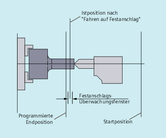

Mit Hilfe der Funktion "Fahren auf Festanschlag" ist es möglich, definierte Kräfte für das Klemmen von Werkstücken aufzubauen, wie sie z. B. bei Reitstöcken, Pinolen und Greifern notwendig sind. Außerdem können mit der Funktion mechanische Referenzpunkte angefahren werden.
Bei hinreichend reduziertem Moment sind auch einfache Messvorgänge möglich, ohne dass ein Taster angeschlossen werden muss. Die Funktion "Fahren auf Festanschlag" kann für Achsen und als Achsen fahrbare Spindeln eingesetzt werden.
| Befehl zum Ein- und Ausschalten der Funktion "Fahren auf Festanschlag" | |
| Funktion einschalten | |
| Funktion ausschalten | |
| Optionaler Befehl zum Einstellen des Klemmmoments Angabe in % vom maximalen Moment des Antriebs. | |
| Optionaler Befehl zum Einstellen der Fensterbreite für die Festanschlag-Überwachung Angabe in mm, inch oder Grad. | |
| Maschinenachsnamen Programmiert werden Maschinenachsen (X1, Y1, Z1 usw.) | |
| Hinweis |
Die Befehle Die Programmierung von |
Die Bewegung zum Zielpunkt kann als Bahn- oder Positionierachsbewegung beschrieben werden. Bei Positionierachsen ist die Funktion auch über Satzgrenzen hinaus möglich.
Fahren auf Festanschlag kann auch für mehrere Achsen gleichzeitig und parallel zur Bewegung anderer Achsen stattfinden. Der Festanschlag muss zwischen Start- und Zielposition liegen.
| Achtung |
KollisionsgefahrSobald die Funktion "Fahren auf Festanschlag" für eine Achse / Spindel aktiviert wurde, darf für diese Achse keine neue Position programmiert werden. Spindeln müssen vor Anwahl der Funktion in den lagegeregelten Betrieb geschaltet werden. |
Beispiel:
| Programmcode | Kommentar |
|---|---|
| X250 Y100 F100 FXS[X1]=1 FXST[X1]=12.3 FXSW[X1]=2 | ; Achse X1 wird mit Vorschub F100 (Angabe optional) auf Zielposition X=250 mm gefahren.Das Klemmmoment beträgt 12.3% vom maximalen Antriebsmoment, die Überwachung erfolgt in einem Fenster der Breite 2 mm. |
| ... |
Die Abwahl der Funktion löst einen Vorlaufstopp aus.
Im Satz mit FXS[<Achse>]=0 dürfen und sollen Verfahrbewegungen stehen.
| Achtung |
KollisionsgefahrDie Verfahrbewegung auf Rückzugsposition muss vom Festanschlag wegführen, sonst sind Anschlag- oder Maschinenbeschädigung möglich. Der Satzwechsel erfolgt nach Erreichen der Rückzugsposition. Wird keine Rückzugsposition angegeben, findet der Satzwechsel sofort nach dem Abschalten der Momentenbegrenzung statt. |
Beispiel:
| Programmcode | Kommentar |
|---|---|
| X200 Y400 G01 G94 F2000 FXS[X1]=0 | ; Achse X1 wird von Festanschlag auf Position X=200mm zurückgezogen. Alle weiteren Angaben sind optional. |
| ... |
Eine programmierte Momentenbegrenzung FXST wirkt ab Satzbeginn, d. h. auch das Anfahren des Anschlags erfolgt mit reduziertem Moment. FXST und FXSW können zu einem beliebigen Zeitpunkt im Teileprogramm programmiert bzw. geändert werden. Die Änderungen werden vor Verfahrbewegungen, die im gleichen Satz stehen, wirksam.
| Achtung |
KollisionsgefahrWenn ein neues Festanschlags-Überwachungsfenster programmiert wird, ändert sich nicht nur die Fensterbreite, sondern auch der Bezugspunkt für die Fenstermitte, wenn sich die Achse vorher bewegt hat. Die Istposition der Maschinenachse bei Änderung des Fensters ist die neue Fenstermitte. Das Fenster muss so gewählt werden, dass nur ein Wegbrechen des Anschlags zum Ansprechen der Festanschlagsüberwachung führt. |
Siehe auch:
Fahren auf Festanschlag (FXS, FXST, FXSW): Weitere Informationen